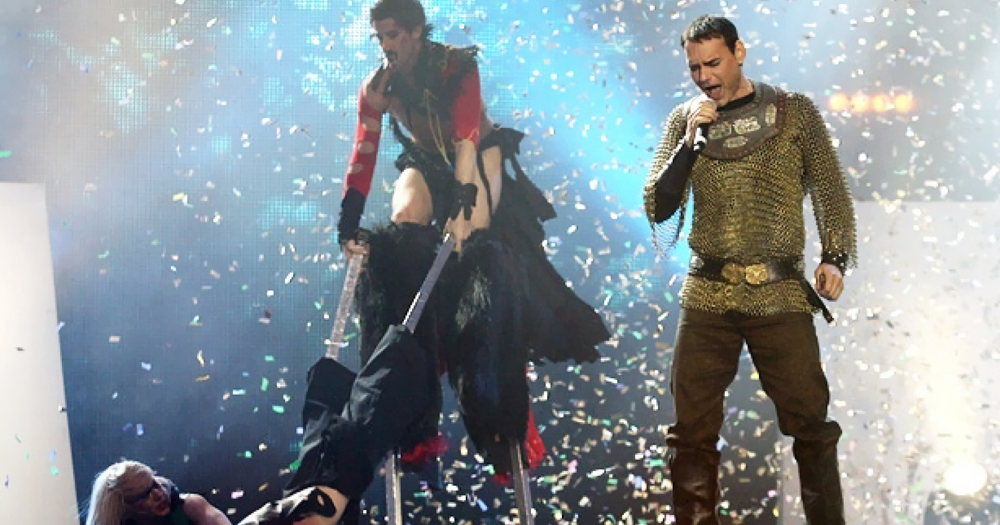

България в Eurovision Song Contest
Krassimir Avramov
Красимир е роден в малкия български град Сливен, но по-късно се премества в столицата на България София,
където учи и работи.
Затова Красимир притежава скромността на момче от малък град, съчетано с дух на
голям град за успех.
Възпитаник на Националната академия за театрално и филмово изкуство (NATFIZ),
той се обучава в
пантомима
под ръководството на известния професор Васил Инджев.
Но Красимир, благословен с много рядък и уникален
мъжки глас, тенорът-алтино, не можа да мълчи дълго.
Дебютният му албум от 1997 г. „Silent Voices“
оглавява поп класациите в България.
Една година по-късно пътуването на Красимир ще продължи в
развлекателната столица на света, Лос Анджелис, Калифорния.
